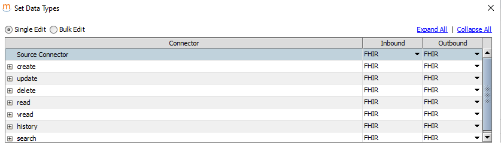
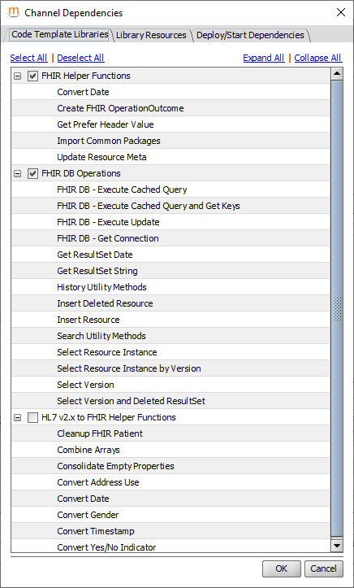
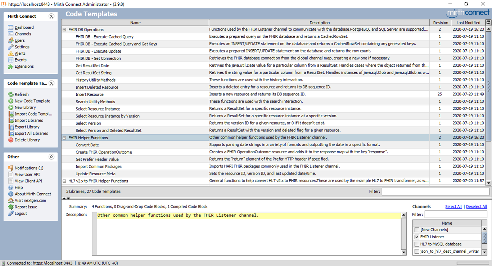

| Using Mirth-API | MirthApiUsage.java (by DISI) |
| SmartHL7 | Free HL7 Tool Viewer Editor Filter Sender Receiver |
docker-compose -f compose-mysql-withvolume.yml upche installa:
Sistema: MySQL Server: db Utente: root Password: root_password Database: mirthdbSi consulta il db che è già popolato in quanto sosituisce derby. Si noti che la tabella
DRIVER: com.mysql.jdbc.Driver URL: jdbc:mysql://db:3306/mirthdb
docker exec -it workingok_mc_1 bash pwd -> /opt/connect cd /home, ls -> vuota cd /opt/connect, ls ->appdata custom-extensions extensions mcserver_base.vmoptions mcservice.vmoptions public_html webapps client-lib custom-lib logs mcserver.vmoptions mirth-server-launcher.jar server-launcher-lib conf docs mcserver mcservice public_api_html server-lib /opt/mirth-connect/conf/mirth.properties
var input = connectorMessage.getRawData(); logger.info( input ); var R1 =Packages. it.unibo.mirth.java.MirthJava0.getText(input);//RESPONSE responseMap.put("R1", R1);
------------------- Messages ------------------- MSH|^~\&|NES|NINTENDO|TESTSYSTEM| ... --------------------Mappings -------------------- Response d1 : SENT: JavaScript evaluation successful. Response R1 : MirthJava0 received: MSH|^~\&|NES|NINTENDO|TESTSYSTEM| ...
curl http://127.0.0.1:7001 curl -H "Content-Type: text/plain" http://127.0.0.1:7001 ------------------- Messages ------------------- Riceve: GET / HTTP/1.1 Host: 127.0.0.1:7001 User-Agent: curl/7.55.1 Accept: */* --------------------Mappings -------------------- Response d1 : SENT: JavaScript evaluation successful. Response R1 : MirthJava0 received: GET / HTTP/1.1Host: 127.0.0.1:7001User-Agent: curl/7.55.1Accept: */*
var dbConn;
try { dbConn = DatabaseConnectionFactory.createDatabaseConnection(
'com.mysql.jdbc.Driver' ,'jdbc:mysql://db:3306/mirthdb','root','root_password' );
var result = dbConn.executeUpdate ("INSERT INTO PERSON (USERNAME, FIRSTNAME, LASTNAME, LOGGED_IN)
VALUES ('"+$('Username')+"', '"+$('FirstName')+"', '"+$('LastName')+"', 0)");
} finally { if (dbConn) { dbConn.close(); }
}
channelTcpBase d6b7c1b0-ac5e-4993-9570-45d8947ad76d HLtoMySQLdatabase 7ef65bb8-203b-4a82-a312-33fb73cff9ed json_to_hl7_dest_channel_writer.xml 69c079fd-1cc3-469f-8f00-b4c51638fdde
Il programma invia con HTTP la seguente stringa JSON:
private static String msgJson = "{\r\n" +
" \"application_sending\" : \"EPICADTBO\",\r\n" +
" \"sending_facility\" : \"DH\",\r\n" +
" \"receiving_application\" : \"LABADT\",\r\n" +
" \"receiving_facility\" : \"DH\",\r\n" +
" \"time\": \"201301011226\",\r\n" +
" \"message_type\" : \"ADT^A01\",\r\n" +
" \"message_control_id\" : \"HL7MSG00001\",\r\n" +
" \"process_id\" : \"P\",\r\n" +
" \"version_id\": \"2.3\"\r\n" +
"}";
Il risultato su Mirth è riportato qui sotto e qui a fianco.
------------------- Messages Raw -------------------
{
"application_sending" : "EPICADTBO",
"sending_facility" : "DH",
"receiving_application" : "LABADT",
"receiving_facility" : "DH",
"time" : "201301011226",
"message_type" : "ADT^A01",
"message_control_id" : "HL7MSG00001",
"process_id" : "P",
"version_id" : "2.3"
}
------------------- Messages Encoded -------------------
MSH|^~\&|EPICADTBO|DH|LABADT|DH|201301011226||ADT^A01|HL7MSG00001|P|2.3|
PID||||||||||||||||||||
PD1|||||
--------------------Mappings --------------------
Response d2 : SENT: Message routed successfully
to channel id: d6b7c1b0-ac5e-4993-9570-45d8947ad76d
|
------------------- Messages Transformed -------------------
<HL7Message>
<MSH>
<MSH.1>|</MSH.1>
<MSH.2>^~\&</MSH.2>
<MSH.3>
<MSH.3.1>EPICADTBO</MSH.3.1>
</MSH.3>
<MSH.4>
<MSH.4.1>DH</MSH.4.1>
</MSH.4>
<MSH.5>
<MSH.5.1>LABADT</MSH.5.1>
</MSH.5>
<MSH.6>
<MSH.6.1>DH</MSH.6.1>
</MSH.6>
<MSH.7>
<MSH.7.1>201301011226</MSH.7.1>
</MSH.7>
<MSH.8/>
<MSH.9>ADT^A01</MSH.9>
<MSH.10>
<MSH.10.1>HL7MSG00001</MSH.10.1>
</MSH.10>
<MSH.11>
<MSH.11.1>P</MSH.11.1>
</MSH.11>
<MSH.12>
<MSH.12.1>2.3</MSH.12.1>
</MSH.12>
<MSH.13>
<MSH.13.1/>
</MSH.13>
</MSH>
<PID>
<PID.1/>
<PID.2/>
<PID.3/>
<PID.4/>
<PID.5/>
<PID.6/>
<PID.7/>
<PID.8/>
<PID.9/>
<PID.10/>
<PID.11/>
<PID.12/>
<PID.13/>
<PID.14/>
<PID.15/>
<PID.16/>
<PID.17/>
<PID.18/>
<PID.19/>
<PID.20/>
</PID>
<PD1>
<PD1.1/>
<PD1.2/>
<PD1.3/>
<PD1.4/>
<PD1.5/>
</PD1>
</HL7Message>
|
curl -H "Content-Type: application/json"--data @json_template.json http://127.0.0.1:7003/api/channels/69c079fd-1cc3-469f-8f00-b4c51638fdde/messages
|
FhirContext FHIR HAPI FhirContext |
Patient FHIR Patient ( Patient resource Tutorial FHIR HAPI Patient FHIR HAPI Patient example HAPI FHIR Client Examples |
Bundle FHIR Bundle ( Bundle Tutorial FHIR HAPI Bundle FHIR HAPI Bundle example HAPI FHIR Client Examples |
Data Types
|
Dependencies |
Code templates |
Connectors (Destinations)
|
insertFhirResourceIl connector FHIR_Listener_create.xml operation invoca l'operazioneQuesta operazione, predisposta per i db postgres e sqlserver, e' stata modificata come riportato a fianco in relazione all'uso di I dati ricevuti nel campo di indice 4 di
Codic troppo disperso?
Meglio usare classi custom? |
function |
source=ChannelReader (1 transformer) --> destinations=ChannelWriter
MODIFICATO: source=TcpReaders ...
Transformer: Convert HL7 v2.x to FHIR Patient.xml
MSH|^~\&|ADT1|SHM|SHMADT|SHM|200812091126|SECURITY|ADT^A01^ADT_A01|MSG00001|P|2.5| EVN|A01|200812091126|| PID|1|1001|1001^5^M11^ADT1^MR^SHM~123456789^^^USSSA^SS||OHALLAHAN^COLLEEN^^||19850704|F||2106-3|1200 N ELM STREET^^NEWPORT BEACH^CA^92660-1020^US^H|OC|(949) 555-1234|(949) 555-5678||S||PATID1001^2^M10^ADT1^AN^A|123456789|U1234567^CA| NK1|1|O'HALLAHAN^BRITTANY^M|SIS^SISTER||||N^NEXT-OF-KIN PV1|1|I|2000^2012^01||||001122^ZOIDBERG^JOHN^|||SUR||||1|A0|